|
|||||||||||||||||||||||||||
|
|||||||||||||||||||||||||||
|
雁ケ峰、東谷山スキー |
| 開 催 日 | ２０１０年２月２０〜２１日 | |||
| リーダー | 木村員士 | |||
| 報 告 者 | 小林義亮 | |||
| HP制作者 | 小林義亮 | |||
| 参加者数 | １５名 （会員１５名） | |||
| 三俣部落の周辺に散らばる山群へのツアーも好評につき実績を重ねて毎シーズン同好の士を集めている。 いつもの雁ケ峰に加えて、昨シーズン二居部落の背後にある日白山がエントリー。今回は日白山の前衛である東谷山（ひがしやさん）の西面を滑ることになった。 |
| １日目 ２月２０日（土） |
| １９日は北海道上空の寒気の影響で雪。２０日は高気圧の東進でだんだん晴れ間がひろがるという予想で、山スキーには願ってもない条件である。 青空が見えだしたころ雁ケ峰に登るべく８：２０にゴンドラ駅に急ぐ。さすがシーズン真っ盛りの土曜日、最上部リフトから稜線を目指す登山客が多い。 |
| 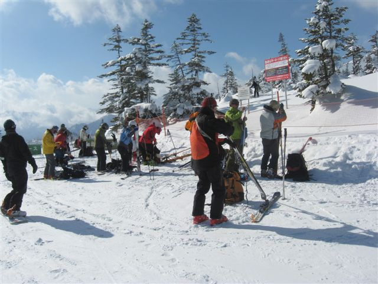 | 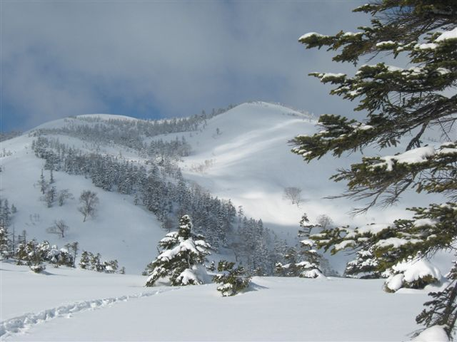 | |
| 高速リフトを降りて出発の準備。雁ケ峰への期待がひろがる。 | 中尾根を見る。積雪が多いため夏の樹林帯が雪原となっている。 | |
| 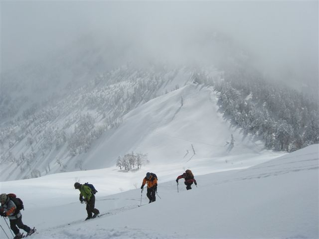 | 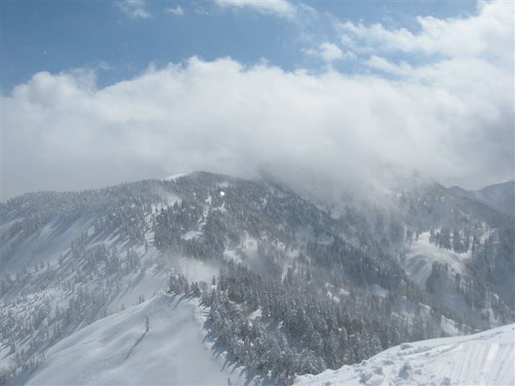 | |
| 今日最後の登りである清八沢の頭へ | 清八沢の頭から雲が晴れてきたかぐら峰方面 | |
| 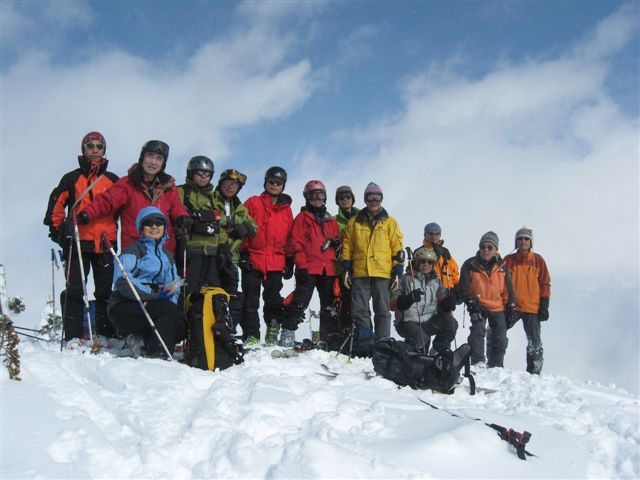 | 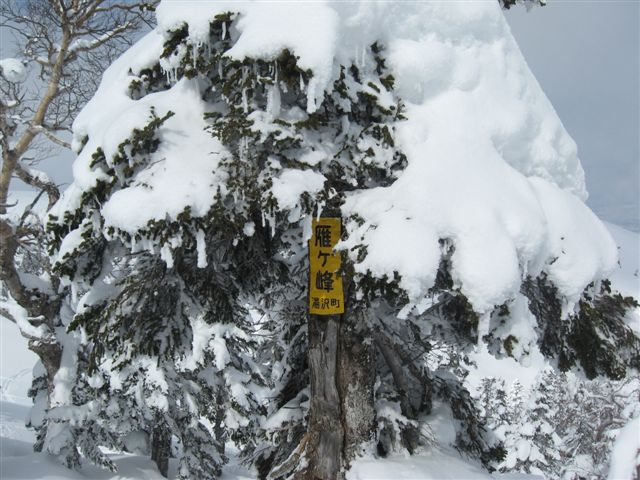 | |
| 清八沢の頭で滑降前の記念写真 | 清八沢の頭には雁ケ峰（地図では下の１６６７Mピーク）の看板がある | |
| 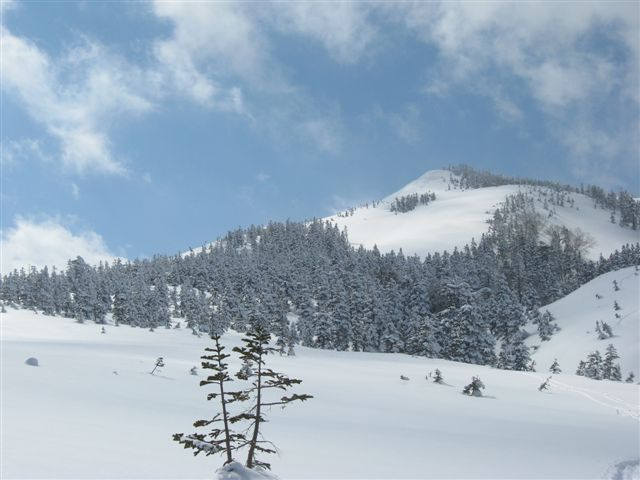 | 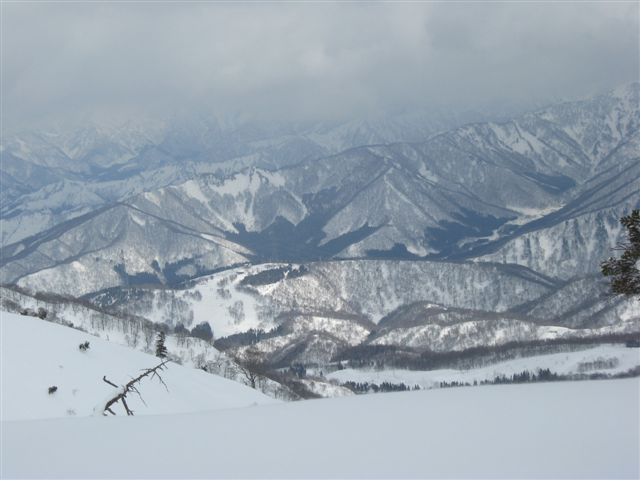 | |
| 一滑りでもうピークは遠くなる | 遙か下に三俣スキー場。かぐらスキー場駐車場まではここからでも 標高差1000メートル以上の滑降が待っていた。 |
| ２日目 ２月２１日（日） |
| 出発地点まで新幹線に乗れば２時間というアプローチのよさ。シールをつけてすぐ古道の雰囲気ある登り。雪の状態によっては技術も要請されるスリルある雪庇の登行。３時間で大展望の山頂。滑降は雰囲気あるブナ林。どこまでも続く腰まで潜る浮遊感ある急傾斜の深雪。大木に守られて雪崩なし。下降開始地点を注意すれば後はルートファインディングの要もなく滑りに専念。滑降高度差８５０メートル。板を外してバス停まで１００メートル、温泉あり。バス、新幹線で東京まで２時間、帰宅してもまだ日は高い。東京近郊では考えられない日帰りコース。なぜ今まで注目しなかったのか悔やまれる。思い立ったら行こう、それが東谷山である。 朝、窓を開けたときには雪が降っていて２０センチほど積もっていたが、急速に晴れてきて、今日一日、無風快晴の上天気が予想された。 |
| 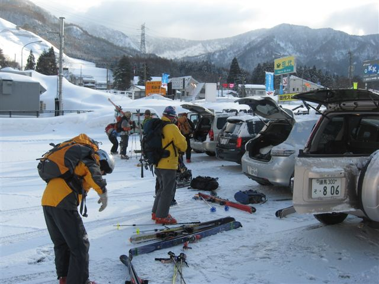 | 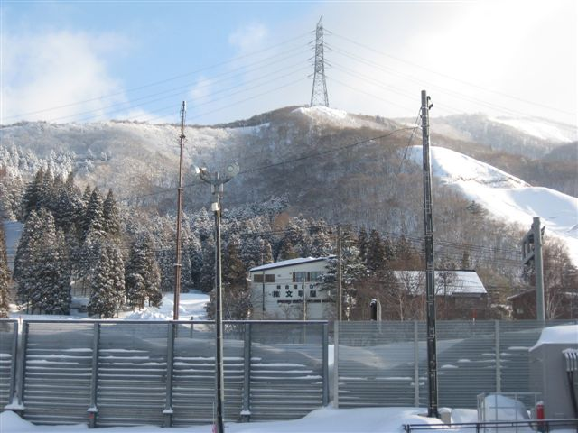 | |
| 田代スキー場の駐車場に車を置いて出発準備 | 上の稜線を行く | |
| 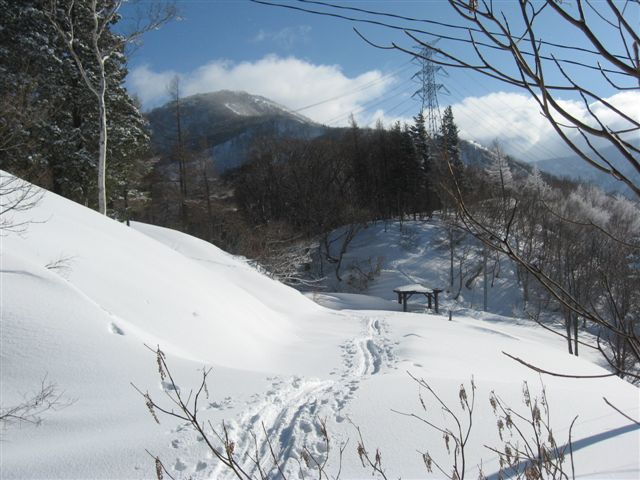 | 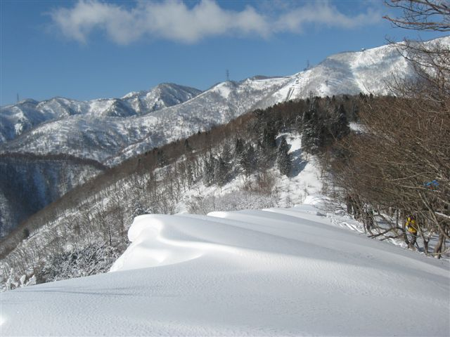 | |
| １時間弱で二居峠。ここから本格的な上りとなる | 振り返ってみた雪庇。向こうは苗場スキー場方面 | |
| 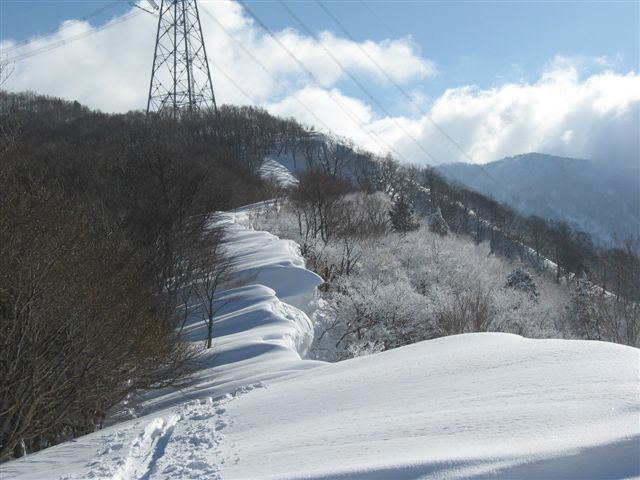 | 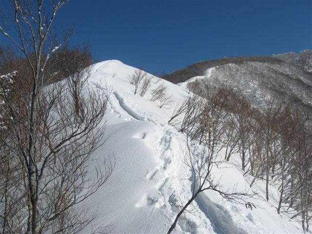 | |
| 進行方面にも雪庇。上越の猛吹雪がこれを発達させた | どこまでも続く雪庇。ナイフリッジ状のところもある。 | |
| 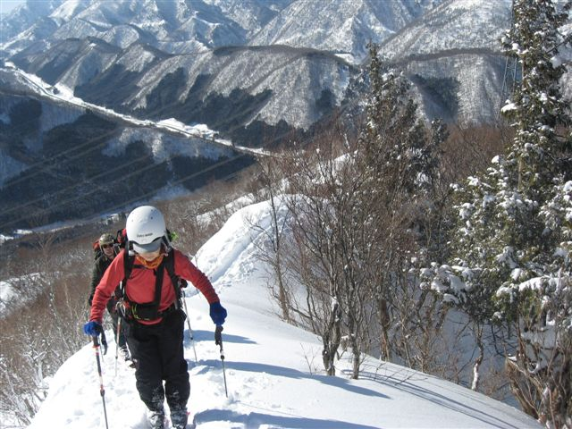 | 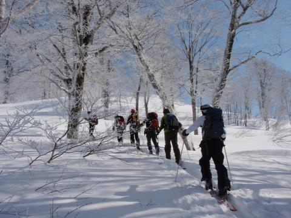 | |
| ヤセ尾根を登るメンバー。左上へのびるのは国道１７号。 | 背後に苗場山が伸び上がる | |
| 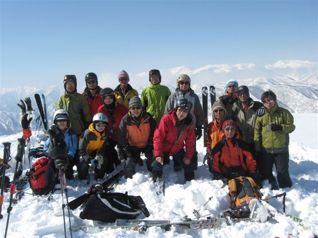 | 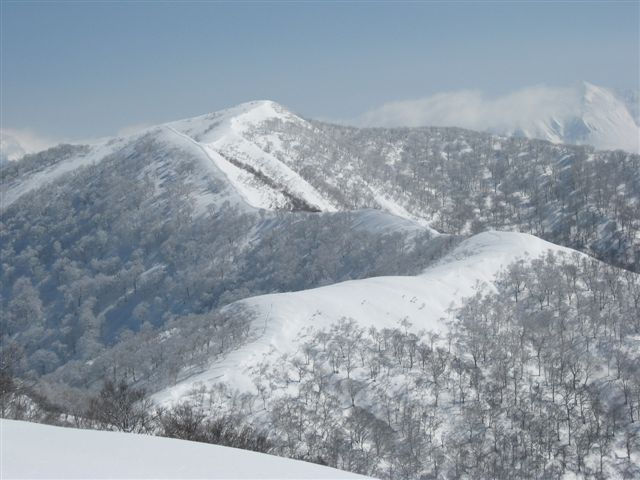 | |
| 山頂にて総勢１５名記念写真の後待望の滑降に移る。背後は苗場山 | 山頂から日白山を見る。上り下り１時間を要する。奥は谷川連峰 | |
| 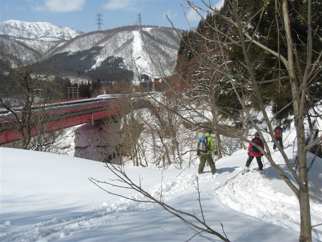 | 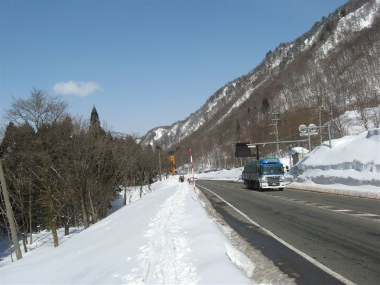 | |
| 顕著な谷に入ったら林道、そしてすぐに国道１７号線が現れる | 国道下を潜って貝掛温泉バス停へ向かう |
| 東谷山での滑り |
| 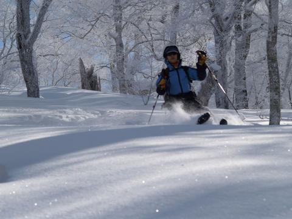 | 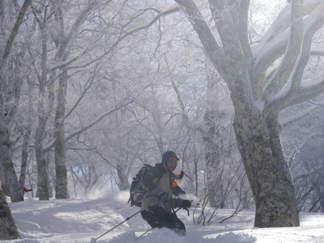 | 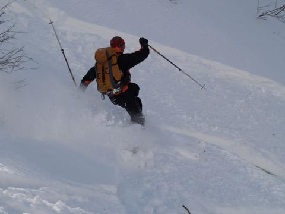 | ||
| 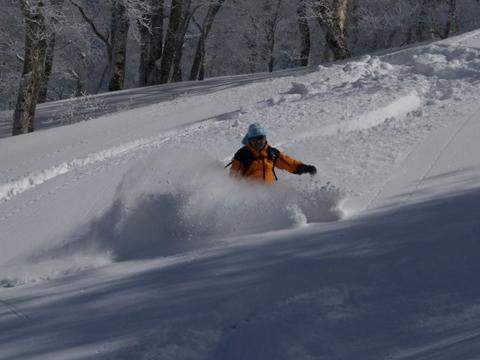 | 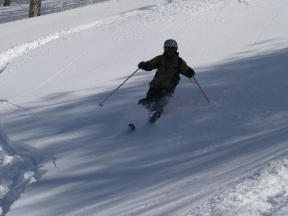 | 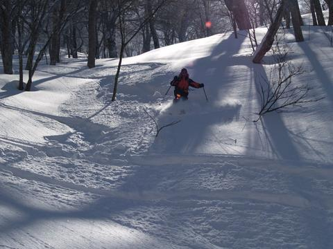 |
| 軌 跡 図 |
| 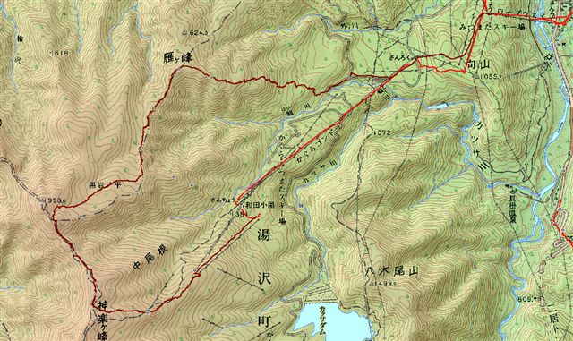 |
| 雁ケ峰 |
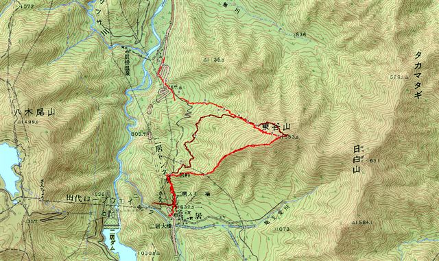
|
| 参加された皆さんのご感想 |
| ＊私は新雪（深雪）の面白さを初めて見せてもらった思いです。よくあれほどの斜面を見つけましたね（Mさん） |
| ＊東谷山頂からの夢のようなパウダー大滑降は雪質、斜度、落差とも申し分なくいまだにあの浮遊感を反芻しています（Oさん） |
| ＊近場にこんな良いルートがあるのを知りませんでした。あまり混雑しないようにそっとして置きたいですね（Hさん） |
| ＊東谷山のパウダー、霧氷のついたブナ林と青空コントラストは格別な、思い出に残る山行でした(Hさん) |
| ＊労少なく益多しのいいとこ取りをさせていただきました。あのような標高差のパウダーをすべったのは初めてでした。山スキーの魅力に 一段と目覚めてしまい困ってしまいます（Nさん） |
| 雁ケ峰コースタイム |
| ０９：０５ | 高速リフト終点 |
| １０：４５ | 中尾根分岐 |
| １１：５５ | 清八沢の頭 |
| １２：２０ | 同頭から滑降 |
| １３：５０ | 雁ケ峰 |
| １４：５５ | スキー場 |
| 東谷山コースタイム |
| ０８：１５ | 田代スキー場出 |
| ０８：５０ | 二居峠 |
| １１：１５ | 山頂 |
| １１：４５ | 滑降開始 |
| １２：５０ | 国道 |
| １３：００ | 貝掛温泉バス停 |
| １３：１３ | バスにて田代スキー場へと戻る |